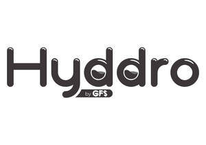

Trade Mark Journal No.2025/048 28 November 2025
UK00004236087 18 July 2025 (6,11,17,35)

- Class 6
- Common metals and their alloys; semi-finished articles of aluminium or its alloys; semi-finished articles made of copper or its alloys; semi-finished articles of lead or its alloys; semi-finished articles of nickel or its alloys; semi-finished articles of tin or its alloys; of common metal; sifting installations of common metal; ventilation ducts, vents, vent covers, pipes; grilles of metal for ventilation, heating, sewage, and air conditioning installations; pipes of metal for transportation of liquids and gas and their metal fittings, valves of metal; ventilation ducts for heating and air conditioning, vents; vent covers, anemostat, pipes, chimney caps; pipes of metal for liquid and gas transfer, pipelines for boring; clips of metal for pipelines, manifolds of metal for pipelines.
- Class 11
- Air-conditioning and ventilation equipment; electrical and gas appliances; plumbing products, namely faucets, shower sets, closet interior sets, bath-shower stalls, bathtubs, toilets, sinks, washbasins, seals for taps, gaskets, water softening equipment, water purification equipment, waste water treatment equipment; filters and filter-motor combinations for aquariums; industrial cooking, drying and cooling installations; pasteurizing and sterilizing machines.
- Class 17
- Flexible pipes made from rubber and plastic, hoses made of plastic and rubber, including those used for vehicles, junctions for pipes of plastic and rubber, pipe jackets of plastic and rubber, hoses of textile material, junctions for pipes, not of metal, pipe jackets, not of metal, connecting hose for vehicle radiators; flexible pipes, hoses and their fittings, not of metal, namely, flexible pipes made from rubber and plastic, hoses made of plastic and rubber, flexible connecting hose for natural gases, canvas hoses, hoses of textile material, junctions for pipes, not of metal, pipe jackets, not of metal, hoses used for vehicles.
- Class 35
- Providing an online marketplace for buyers and sellers of goods and services in the field of heating and plumbing equipment; wholesale and retail services relating to the sale of heating and plumbing equipment, ores of non-precious metal, common metals and their alloys and semi-finished products made of these materials, metal building materials, goods and materials of common metal used for storage, wrapping, packaging, sheltering and building purposes; wholesale and retail services relating to the sale of ventilation ducts, vents, vent covers, pipes, chimney caps, manhole covers; wholesale and retail services relating to the sale of grilles of metal for ventilation, heating, sewage, air conditioning installations; wholesale and retail services relating to the sale of pipes of metal for transportation of liquids and gas and their metal fittings, valves of metal, drilling pipes of metal; wholesale and retail services relating to ventilation ducts for heating and air conditioning, vents, vent covers, anemostat, pipes, chimney caps, pipes of metal for liquid and gas transfer, pipelines for boring, clips of metal for pipelines, manifolds of metal for pipelines; wholesale and retail services relating to the sale of air-conditioning and ventilation equipment; wholesale and retail services relating to the sale of plumbing products, namely faucets, shower sets, closet interior sets, bath-shower stalls, bathtubs, toilets, sinks, washbasins, seals for taps, gaskets, water softening equipment, water purification equipment, waste water treatment equipment; wholesale and retail services relating to the sale of filters and filter-motor combinations for aquariums, industrial cooking, drying and cooling installations, pasteurizing and sterilizing machines; wholesale and retail services relating to the sale of flexible pipes made from rubber and plastic, hoses made of plastic and rubber (including those used for vehicles), junctions for pipes of plastic and rubber, pipe jackets of plastic and rubber, hoses of textile material, junctions for pipes (not of metal), pipe jackets (not of metal); wholesale and retail services relating to the sale of connecting hose for vehicle radiators, flexible pipes, hoses and their fittings (not of metal), namely, flexible pipes made from rubber and plastic, hoses made of plastic and rubber, flexible connecting hose for natural gases, canvas hoses, hoses of textile material; wholesale and retail services relating to the sale of junctions for pipes (not of metal), pipe jackets (not of metal), hoses used for vehicles.
GFS FLEX LIMITED
Representative: J A Kemp LLP